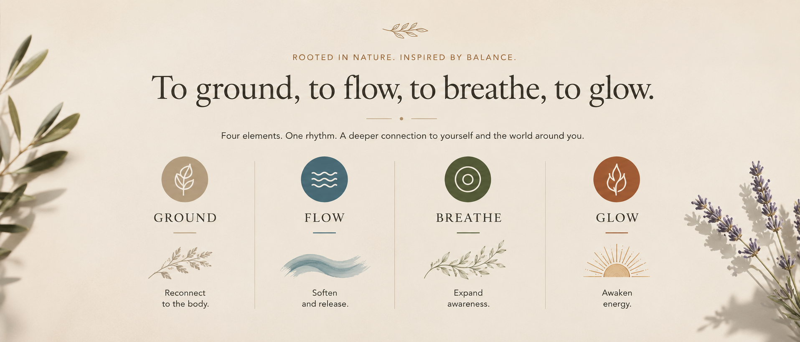
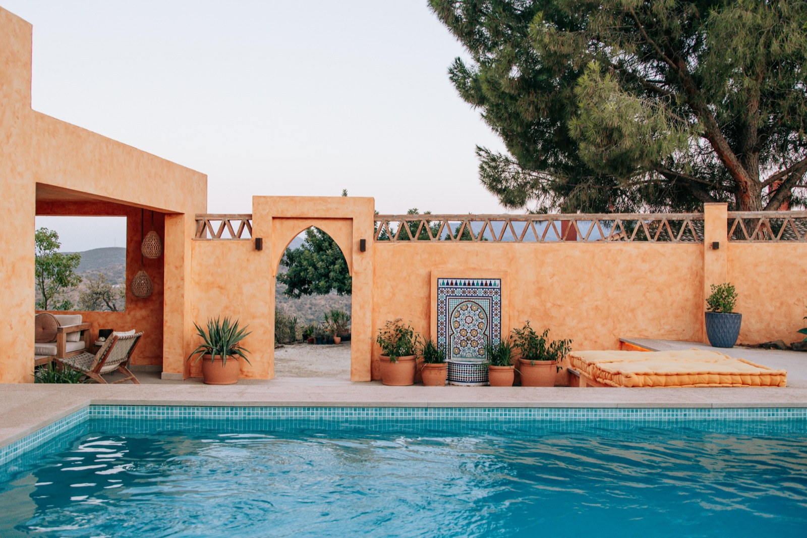
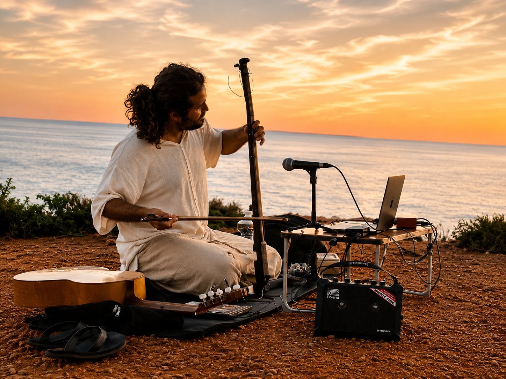

Day 1 | Earth
Grounding yoga to reconnect with the body, plant discovery, nature connection, and a soulful dinner with music beneath the stars.



The Retreat
Escape to the heart of Andalucía for a magical retreat inspired by the elements of Earth, Fire, Water, and Air — a space to slow down, reconnect, and transform.

 Explore the location
Explore the location

inspired by the elements
Surrounded by waterfalls, mountains, nature, and peaceful donkeys, this is a space to slow down, reconnect, and transform.
Through yoga, breathwork, guided movement meditation, cacao ceremony, voice activation, and healing sound journeys, each day invites you to awaken a different element within yourself.
Relax in beautiful surroundings, enjoy swimming pool, jacuzzi and nourishing meals prepared by our talented chef, rest deeply in comfortable glamping tents beneath the stars.
Guided by Rosa and Pouyan, two warm and passionate souls, this retreat is an invitation to reconnect with nature, open your heart, and rediscover the magic within.

Over the course of 3 nights and 4 days, you will journey through the elements of Fire, Water, Air and Earth through yoga, breathwork, movement meditation, sound healing, cacao ceremony, music, nature immersion, and meaningful human connection. Each day is designed to awaken a different quality within you — grounding, flow, clarity, expression and inner vitality.
You will be guided by two beautiful souls, expert mentors who lead with profound empathy and radiant energy. Their workshops aren’t just “classes”; they are immersive experiences designed to break through the static, unlock your inner wisdom, and spark a lasting glow from within.
Grounding yoga to reconnect with the body, plant discovery, nature connection, and a soulful dinner with music beneath the stars.
Starting a day with meditation, followed by an afternoon hike to magical waterfalls, where you will embrace fluidity through a breathing session. Ending the day with a sound session.

Dynamic yoga, voice activation, cacao ceremony, guided movement meditation designed to awaken your inner glow. Paella cooking class with the chef.

Sunrise yoga, gratitude practices, and a heartfelt closing circle to reflect, reconnect, and integrate the journey.

Sound Journey

Sebastián Serpell
In my Sound Meditations I invite you to close your eyes, relax and to travel with the vibrations and resonances of instruments coming from around the world, letting them take you thru different emotions and sensations, to slowly enter in a deep meditation.
Sebastián Serpell is a musician, composer, multi-instrumentalist with experience doing live music for many disciplines like yoga, therapies, theatre, dance, ceremonies, among others.
A small circle of passionate facilitators, creators, and guides dedicated to crafting meaningful experiences through nature, movement, music, nourishment, and human connection.

Pouyan is a music producer and facilitator who creates immersive experiences through sound, movement, voice, and breathwork. Inspired by travel, music, and spiritual traditions from around the world, his sessions invite deep connection, emotional release, freedom, and self-expression.
Through rhythm, energy, presence, and guided movement, he creates transformative spaces designed to awaken creativity, open the heart, and reconnect people with themselves. His approach blends music, meditation, embodiment, and emotional exploration into experiences that feel both grounding and expansive.

With a foundation in yoga, scent alchemy, and a deep connection to nature, Rosa creates grounding and heart-opening experiences inspired by the wisdom of the elements. Through movement, plants, mindfulness, and intuitive practices, she gently guides others back to balance, presence, and inner connection.
Her warm and nurturing approach creates a safe and welcoming space where guests can slow down, reconnect with themselves, and embrace the beauty of the present moment. Inspired by nature, ritual, and holistic wellbeing, Rosa brings softness, depth, and intention into every part of the retreat experience.

Chris is a passionate professional chef who believes food is an essential part of connection, wellbeing, and shared experience. Using fresh local ingredients and inspiration gathered through his travels, he creates vibrant and nourishing meals designed to support both body and soul throughout the retreat.
From beautiful dinners beneath the stars to immersive paella cooking experiences, his food brings warmth, joy, creativity, and meaningful moments shared together around the table. His approach combines flavour, simplicity, and care to create meals that feel both grounding and memorable.

Kasia is a hospitality professional and event organiser who brings warmth, care, and positive energy to every part of the retreat experience. She will be your main point of contact throughout the journey, ensuring everything flows smoothly and supporting you with anything you may need — from transportation and comfort to dietary requirements and special requests.
She also captures beautiful moments and memories throughout the retreat, helping create a welcoming atmosphere where everyone feels relaxed, supported, and truly at home. Her thoughtful presence and attention to detail help guests feel deeply cared for from beginning to end.